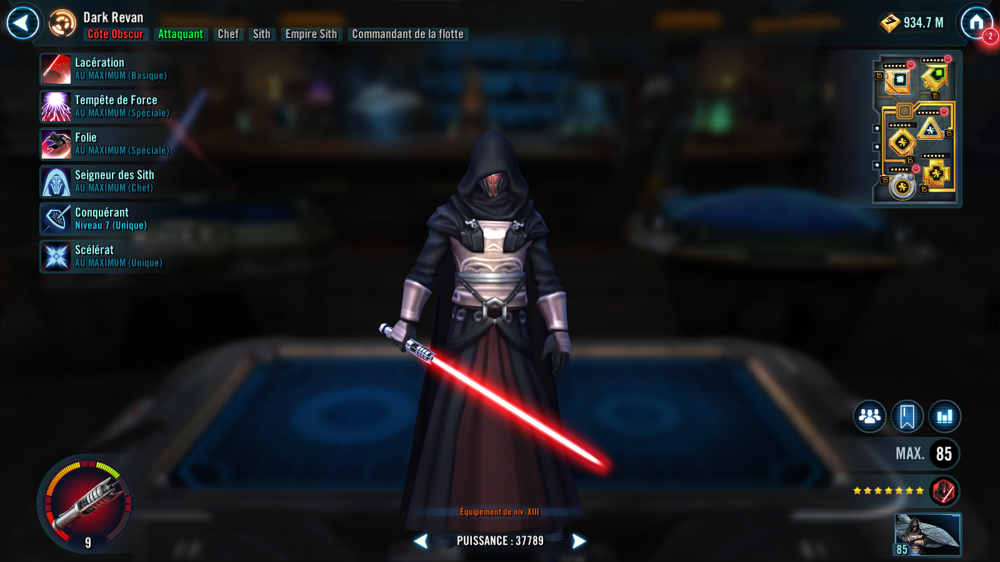

Darth Revan
Ruthless Sith Lord that is extremely effective at taking down the enemy leader
Ruthless Sith Lord that is extremely effective at taking down the enemy leader

Deal Special damage to target enemy. Inflict Buff Immunity on target enemy and enemy leader for 2 turns. If the target is the leader, reduce Darth Revan's cooldowns by 1.
Deal Special damage to all enemies and Shock them for 2 turns. All Sith Empire allies gain 5 stacks of Ferocity for 2 turns. This attack can't be evaded.
Ferocity: -15% Defense and Tenacity per stack, +8% Offense and Potency per stack; can't be copied
Deal Special damage to target enemy and inflict Fear on them and enemy leader for 1 turn. If the target is the leader, or if the leader is defeated, inflict Fear on all enemies for 1 turn. This Fear can't be copied, dispelled, or resisted and this attack can't be evaded.
Fear: Miss the next turn, can't use abilities, and can't evade. Increase cooldowns by 1 and Fear expires on taking damage from an attack.
Sith Empire allies are immune to Turn Meter reduction while they are debuffed, and gain 10% Critical Chance and 15 Speed for each of their own debuffs. At the start of each Sith Empire ally's turn, they gain 5 stacks of Ferocity for 2 turns.
If all allies are Sith Empire at the start of battle (excluding summoned allies), Sith Empire allies have +50% Critical Damage.
At the end of each turn, if an enemy fell below 50% Health during that turn, inflict Deathmark on the enemy leader for 1 turn if Darth Revan is in the leader slot and not the ally slot. This Deathmark can't be copied, dispelled, evaded, or resisted.
Darth Revan has +100% Defense Penetration. At the start of each Sith Empire ally's turn, dispel all Foresight on all enemies, which can't be evaded.
When a Sith Empire ally is inflicted with Ability Block or Stun, they dispel that debuff and gain Ferocity for 2 turns.
Enemies can't assist or attack again if their attack is targeting Darth Revan.

When Darth Revan uses an ability during their turn, if the selected target is already inflicted with Deathmark, Fear, or Corrupted Battle Meditation, Darth Revan immediately uses Lacerate.
When Fear expires on an enemy, they also dispel all buffs on themselves.
When Darth Revan's Health falls below 50%, it is equalized with the other healthiest ally.